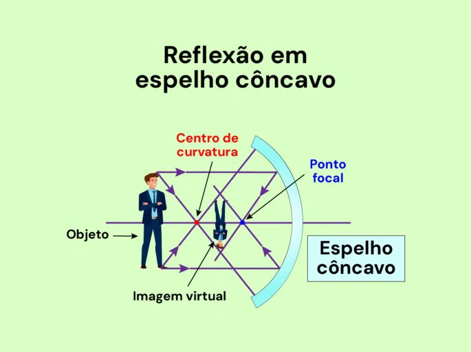

As imagens são formadas por meio de raios de luz que saem de um objeto e sofrem reflexão ou refração, que são causadas por meio de fenômenos ópticos fazendo com que esses raios (ou o prolongamento deles) se cruzem.

1. Tipos de Imagens: Reais vs. Virtuais Dependendo de como os raios de luz se comportam após refletir ou refratar, a imagem pode ser classificada em duas categorias: Imagem Real: É formada pelo cruzamento efetivo dos próprios raios de luz. Características: Pode ser projetada em uma tela (como no cinema ou na retina do olho) e é sempre invertida em relação ao objeto. Imagem Virtual: É formada pelo cruzamento dos prolongamentos dos raios de luz (onde a luz "parece" se cruzar, mas não cruza de fato). Características: Não pode ser projetada em uma superfície e é sempre direta (de cabeça para cima), como a imagem que você vê ao se olhar no espelho do banheiro. 2. Os Meios de Formação: Espelhos e Lentes Os fenômenos ópticos acontecem principalmente através de dois tipos de dispositivos: Espelhos (Reflexão): A luz bate na superfície e volta para o mesmo meio. Planos: Formam imagens virtuais, diretas e do mesmo tamanho do objeto. Esféricos (Côncavos e Convexos): Podem ampliar, reduzir ou inverter a imagem dependendo da distância do objeto. Lentes (Refração): A luz atravessa o material (como vidro ou acrílico) mudando de velocidade e desviando sua trajetória. Convergentes: Juntam os raios de luz em um ponto. Divergentes: Espalham os raios de luz. 3. As Três Características de Toda Imagem Sempre que uma imagem é projetada ou vista, a física a classifica de acordo com três critérios: Natureza: Real ou Virtual. Orientação: Direta (de cabeça para cima) ou Invertida (de cabeça para baixo). Tamanho: Maior, menor ou de mesmo tamanho que o objeto original. 4. Como o Olho Humano Processa essa Imagem O olho funciona exatamente como uma câmara fotográfica: A luz reflete nos objetos ao seu redor e entra no olho atravessando a córnea e o cristalino (que funcionam como lentes convergentes). A luz sofre refração e foca exatamente na retina (no fundo do olho). A imagem formada na retina é real e invertida (de cabeça para baixo). O cérebro recebe esses sinais elétricos pelo nervo óptico e reverte a imagem para que você a enxergue na posição correta.
A física das cores estuda como a luz interage com a matéria e com os nossos olhos para criar a percepção de cor. A cor não é uma propriedade intrínseca e fixa dos objetos, mas sim a forma como o nosso cérebro interpreta a luz refletida ou emitida por eles.1. O que é a Cor? (O Espectro Eletromagnético)A luz visível é uma pequena faixa da radiação eletromagnética. Cada cor corresponde a um comprimento de onda ($\lambda$) e uma frequência ($f$) específicos:Vermelho: Maior comprimento de onda ($\approx 700\text{ nm}$), menor frequência e menor energia.Violeta: Menor comprimento de onda ($\approx 400\text{ nm}$), maior frequência e maior energia.
A luz do Sol ou de uma lâmpada branca é uma mistura de todas as cores do espectro visível. Quando essa luz atravessa um prisma, ela sofre dispersão (cada cor se refrata com um ângulo diferente), revelando o arco-íris. 2. Como os Objetos Têm Cor? Quando a luz branca atinge um objeto, três coisas podem acontecer: absorção, reflexão ou transmissão. Absorção e Reflexão: Uma maçã parece vermelha porque os pigmentos da casca absorvem todas as cores da luz (azul, verde, amarelo, etc.) e refletem apenas o vermelho para os seus olhos. Objeto Branco: Reflete praticamente todas as frequências de luz visível. Objeto Preto: Absorve praticamente todas as frequências de luz, transformando a energia luminosa em calor.
A reflexão da luz é basicamente o que acontece quando a luz bate em uma superfície e "bate de volta". É graças a isso que a gente consegue ver as coisas e, claro, se enxergar no espelho!
Para qualquer espelho, a luz sempre segue duas regras bem simples: O raio de luz que chega, o raio que volta e a linha reta do meio ficam no mesmo plano. O ângulo que a luz bate é exatamente igual ao ângulo que ela volta. Se a luz bater bem inclinada, ela vai sair bem inclinada do outro lado.
São os espelhos retos do dia a dia. Eles têm umas características bem específicas sobre a imagem que formam: Tamanho igual: A sua imagem no espelho tem exatamente o mesmo tamanho que você. Mesma distância: Parece que a imagem está "dentro" do espelho, na mesma distância que você está do lado de fora. Imagem Virtual: A gente chama de virtual porque ela é formada "atrás" do espelho pelo cruzamento da luz. Lado trocado (Enantiomorfa):: Se você levantar a mão direita, a sua imagem no espelho vai levantar a mão esquerda dela! É por isso que a palavra AMBULÂNCIA é escrita ao contrário na frente dos carros, para o motorista da frente ler certo pelo retrovisor.
Esses espelhos são curvos, como se fossem um pedaço de uma bola cortada. Eles se dividem em dois tipos:
O que faz: Ele consegue juntar a luz em um ponto só (chamado de foco). Como fica a imagem: Depende de onde você está! Se você chegar bem perto, a imagem fica gigante e de cabeça para cima. Se você se afastar, a imagem vira de cabeça para baixo e vai diminuindo. Onde é usado: Espelhos de maquiagem/barbear (para ampliar o rosto), espelho do dentista e refletores de farol de carro.
O que faz: Ele espalha a luz. Como fica a imagem: A imagem é SEMPRE menor, de cabeça para cima e "dentro" do espelho. Por que usar: Como a imagem fica menor, cabe muito mais coisa dentro do espelho! Ele dá um campo de visão gigante. Onde é usado: Retrovisores de carros, espelhos de segurança em ônibus, corredores de mercado e portarias.
O olho humano opera como uma câmera fotográfica biológica, projetando imagens em uma superfície sensível à luz. O objetivo principal do sistema óptico ocular é dobrar (refratar) os raios de luz que chegam dos objetos para que eles se cruzem exatamente sobre a retina.
Córnea: É a estrutura transparente e curvada na frente do olho. Funciona como a primeira e principal lente convergente, realizando cerca de $70\%$ do desvio da luz. Íris e Pupila : A íris (parte colorida) atua como o diafragma de uma câmera. Ela ajusta o tamanho da pupila (a abertura) para controlar a quantidade de luz que entra — reduzindo o diâmetro no claro e aumentando no escuro. Cristalino: É uma lente convergente biconvexa e flexível. Ele realiza o "foco fino" da imagem por meio da acomodação visual: Para objetos próximos: Os músculos ciliares se contraem, deixando o cristalino mais curvo e com maior grau de convergência.Para objetos distantes: Os músculos relaxam, deixando o cristalino mais fino e menos convergente. Retina: Funciona como o sensor da câmera. Como o olho utiliza lentes convergentes, a imagem formada na retina é real, invertida e menor que o objeto. O cérebro recebe essa informação pelo nervo óptico e reverte a imagem para a posição correta.